Mathematically Modeling a Phone Stand
Objective
When watching TV, scrolling, or playing games on a phone, users often need to hold their device for extended periods of time. This can easily become very uncomfortable and reduce the overall experience and relaxation. In order to maximise comfort, I need to find a way to hold the phone up without sacrificing the experience in the process.
Problem
Design a compact, freestanding phone stand that securely supports a phone on a table or other flat surface. The stand should maximize screen visibility while remaining compact, cheap, easy to carry and use, durable, and not permanent.
Possible Solutions
To solve this issue I came up with three possible solutions:
- A triangular stand that sticks to the back of the phone and holds it up
- An easel design: an adjustable handle can be used to hold up the phone
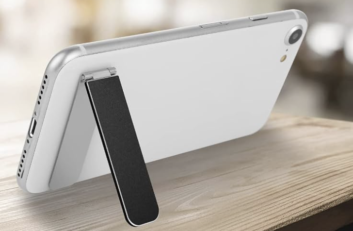
- A design that places the phone in a block with a slant
| Pros | Cons | |
|---|---|---|
| Solution 1: triangular stand | This is the sturdiest design of the three and the most durable. | This design is more permanent: once you attach it to the phone it will be difficult to remove and adjust. |
| Solution 2: easel design | This design is very easy to adjust and customize to one's preferences. | Because of the hinge it is difficult to manufacture. It is also less durable because of it. |
| Solution 3: block design | This design is simple to manufacture and sturdy, while allowing you to remove it at any time. | It is not as adjustable as the second design (the viewing angle can not be changed without changing the CAD itself). |
After much deliberation, I have decided that the solution that adhered most to our constraints was solution 3: the block design. The first design, because it would be stuck to the phone, was more of a permanent solution. On the other hand, the second design, because it was adjustable, would be harder to manufacture and less sturdy than the other designs (which I am prioritizing more than adjustability for this design).
Design Process
Normally, I would prototype and design the stand. However, I have decided to approach this challenge with mathematical modeling: I am going to completely design, taking account for tipping and other factors, before creating the model.
Looking at other stand designs and based on personal experiences, I have found that stands that work the best often have a certain degree of slant. After eyeing the slants, I found that the angles that worked best for me were within 60 and 75 degrees. Through research by Lenovo, I found that the ideal viewing angle was, in fact, between 60 and 80 degrees. I eventually decided to design my prototype with the viewing angle of 75 degrees which is within both ranges.
After finding the ideal viewing angle, I began to envision how I wanted the general structure of the stand using a cross section of the stand. Although I eventually planned on customizing the stand later on with the body of an animal (cat, dog, bunny, etc), I decided to first experiment with a simple rectangular body to grasp the measurements of the stand.
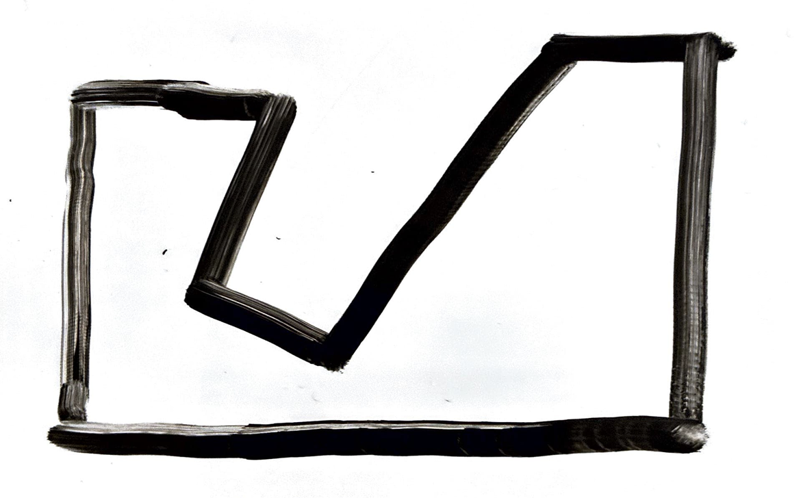
Using this initial guideline, I determined the measurements that I would need to find in order to fully define this design.
The measurements needed to determine the design are:
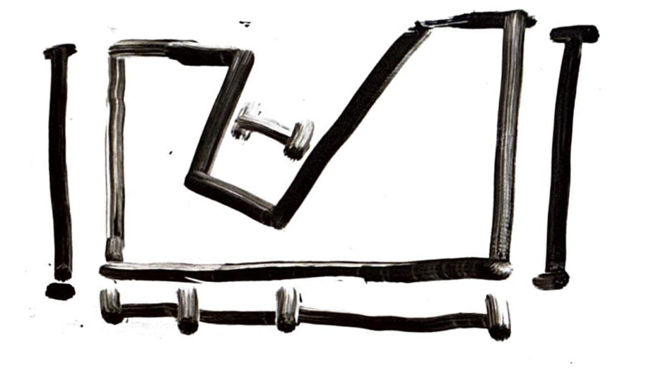
Previously I determined slant angle x = 75 degrees, using this I started my design. Following this, I measured a physical phone as reference (Iphone 13 pro max) and determined that the thickness of the phone was approximately 11.5 mm, with tolerance I arrived at a width w = 13 mm for the phone stand. Using trigonometry, I calculated how this width would correspond to the base, leading to a length of 14 mm.
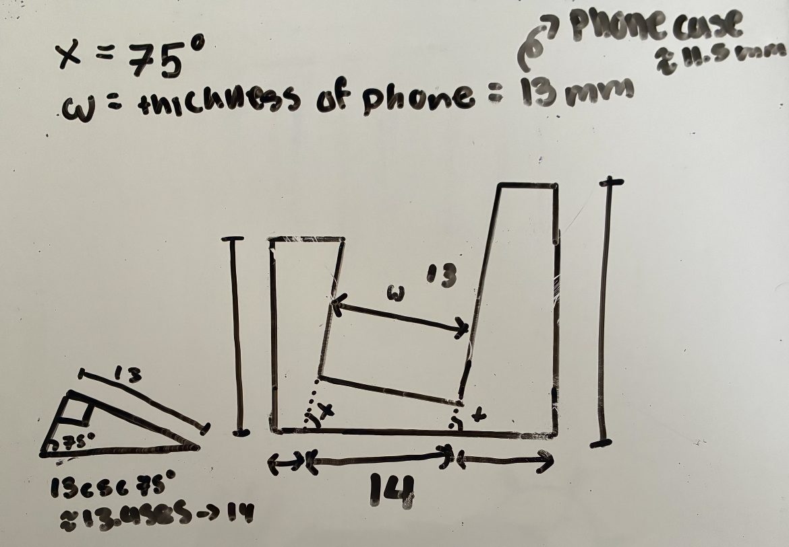
For the front of the phone stand, it needed to be sturdy enough that it wouldn't break when a phone was put in the stand but not so thick that it would be just adding extra weight to the overall design (past the thickness needed to stay sturdy). Using these parameters, I decided that the width for the front of the phone stand should be 6 mm. Using a similar process, I decided that the height of the bottom portion of the front of the phone stand would be 4 mm. Next, I measured the screen of the phone to find a height for the front that would both be able to hold up the phone without covering too much of the screen, arriving at a height of 8 mm and giving the overall front of the stand a height of 12 mm.
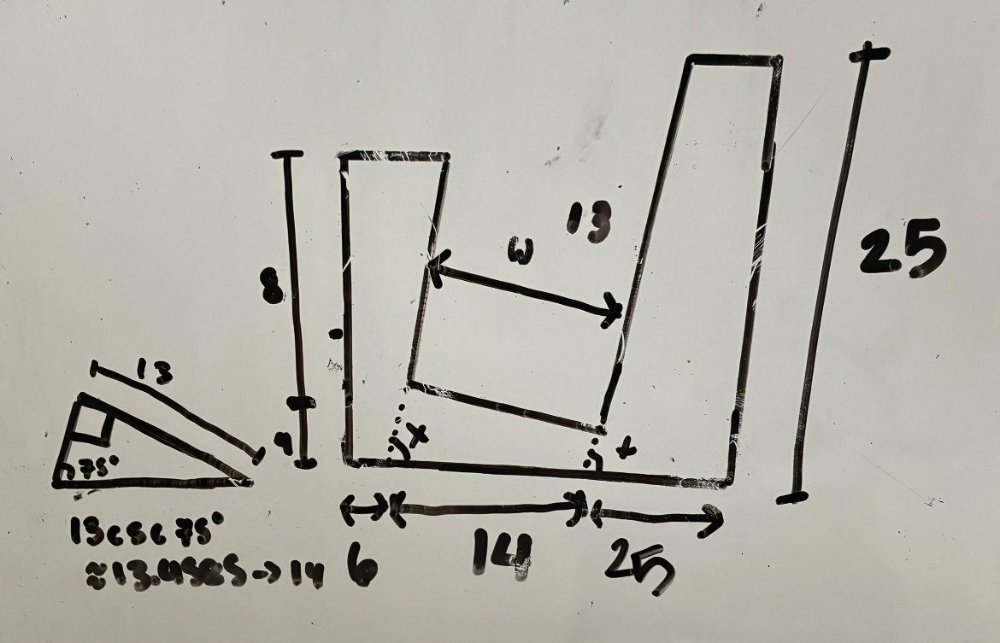
Designing the rear of the phone stand was the most complicated part of the design process. In order for the stand to hold up the phone without toppling, the center of gravity of the phone should be vertically within the base of the phone stand. To do this I first determined the center of gravity of the phone. Because the weight of a phone was pretty evenly distributed and the phone was a rectangular prism, the center of gravity would be near the center of the phone. The length of the model phone was around 166 mm, using the previous logic the center of gravity would be around 83 mm from the bottom (parallel to the phones sides). Following this, I used trigonometry to determine the length of the rear portion of the phone stand. I calculated that to be 22 mm. However, to ensure additional stability, I increased the length of the rear portion of the stand to be 25 mm. I also chose an arbitrary height of 25 mm on the rear.
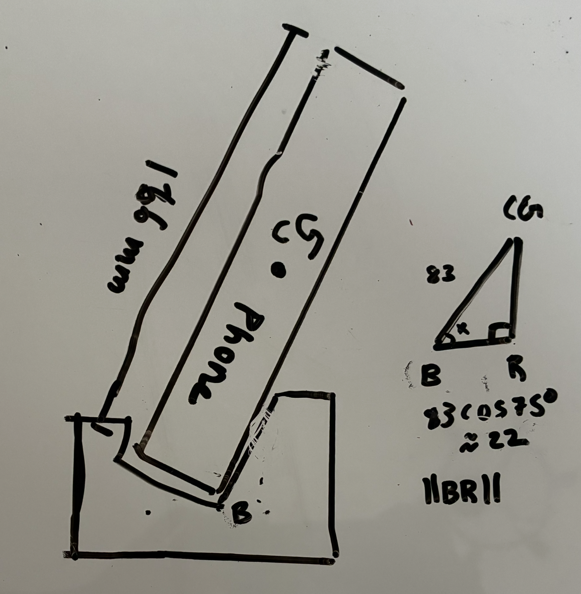
Using this sketch, I converted this design to CAD.
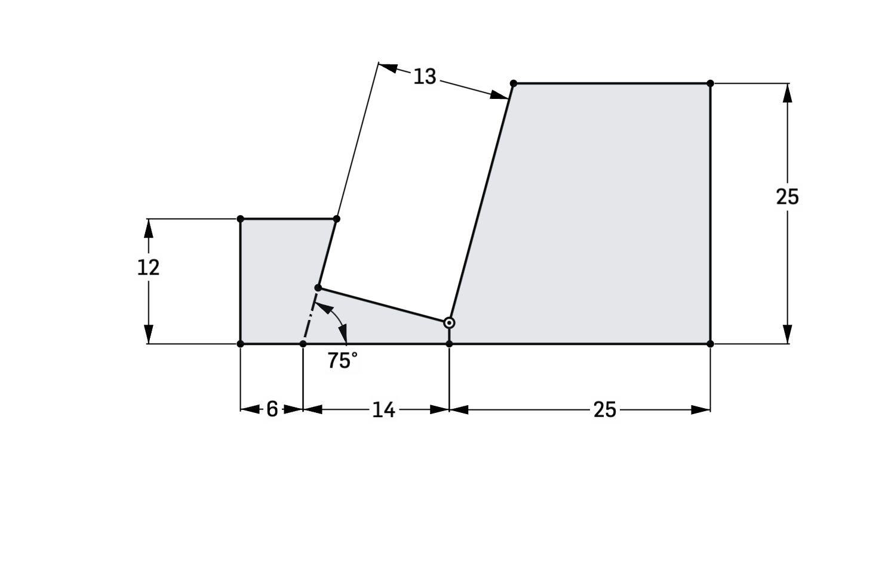
Extruding this design into a 3D prototype (giving it a thickness of 13 mm), I arrived at this final design of my stand.
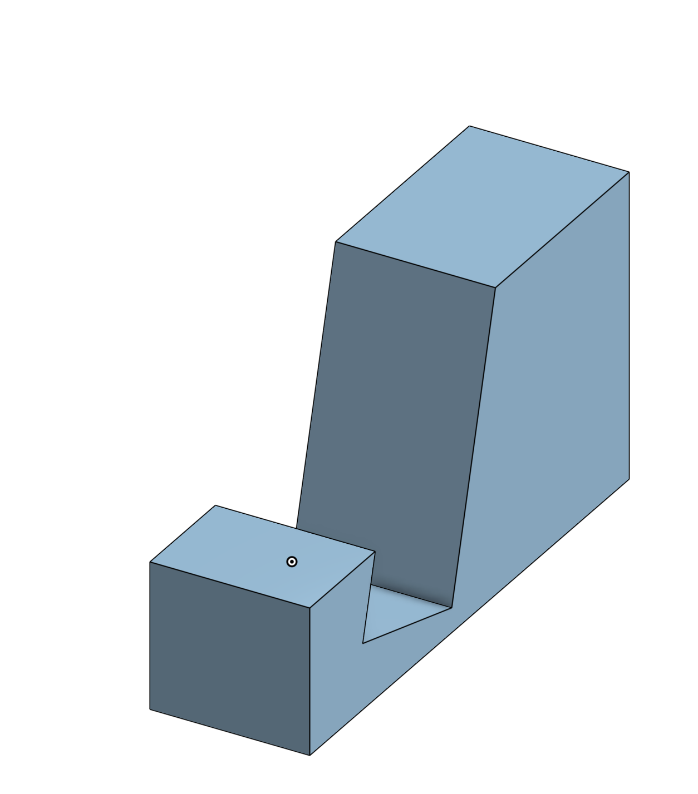
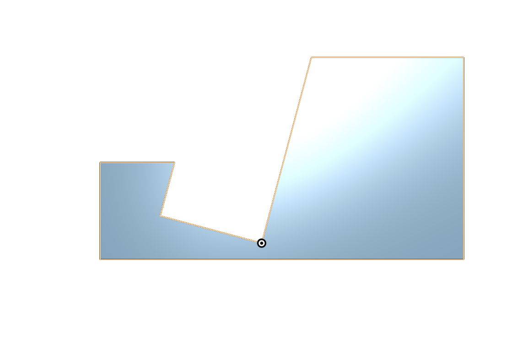
I converted this CAD design into a 3D printing slicer, converting the CAD into gcode. I then sent this to my 3D printer to create a physical model.

After printing for approximately 19 min, the model, with a weight of 5 g and 125 layers, was complete.
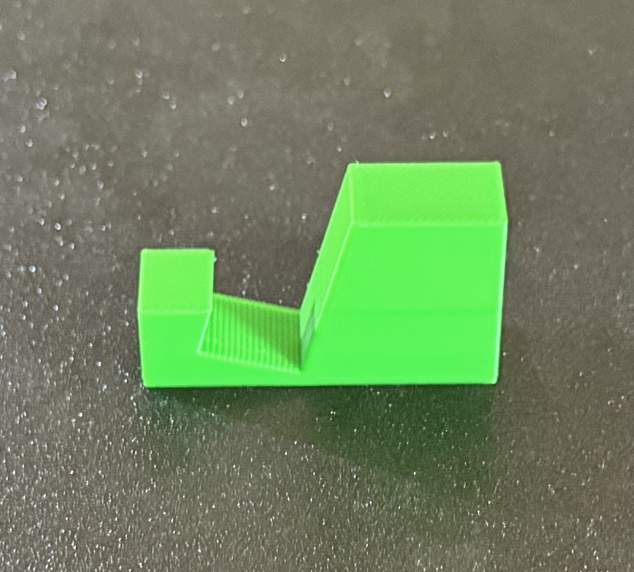
I tested this model on a variety of phones (IPhone 13 Pro Max, IPhone 16E, Iphone 14 Pro) and it was able to hold them stably.
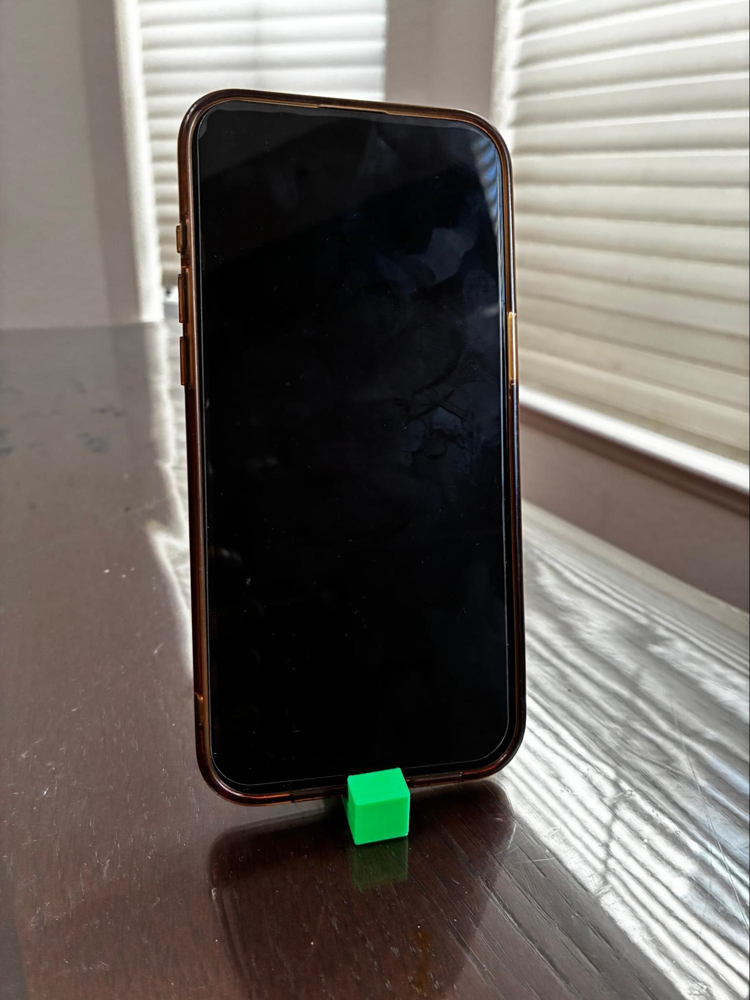
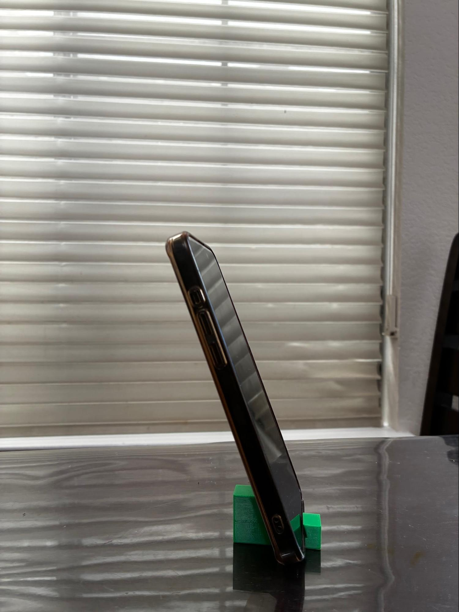
Next Steps
Although this solution is stable and functional, some steps that can be taken to improve the design is to make it more aesthetically pleasing by replacing the geometrical design with the body of the animal or other unique shapes. In addition, I can also create a more generic design for the stand where anyone can provide parameters - width of the device, height of the device, and the viewing angle - and the design will adjust to these constraints.
MORE TO COME LATER